PSAT-언어논리 (2015-02-07 기출문제)
1. 다음 글의 내용과 부합하지 않는 것은?
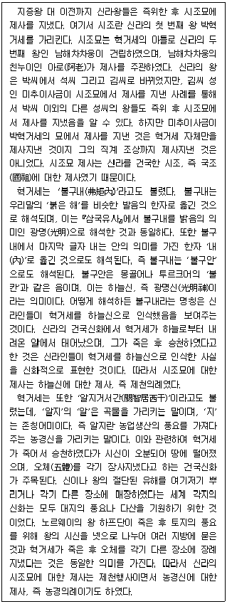
- 시조묘의 건립뿐 아니라 건립 당시 제사도 시조왕의 자식이 주관하였다.
- 김씨 왕들은 시조묘의 제사에서 자신들의 왕조 시조인 김알지에 대해 제사를 지냈다.
- 혁거세가 강림한 알에서 태어나고 죽어서 하늘로 올라갔다는 신화는 그를 광명신으로 인식하였음을 보여준다.
- 혁거세의 별칭인 '弗矩內'의 '內'를 '내'로 보느냐, '안'으로 보느냐에 상관없이 '弗矩內'는 밝음의 의미를 가진다.
- 혁거세가 '알지'로 불렸던 것과 사체가 토막 나 지상에 떨어진 후 장사지냈다는 것은 혁거세가 농경신임을 의미한다.
(정답률: 알수없음)

2. 다음 글에서 알 수 있는 것은?
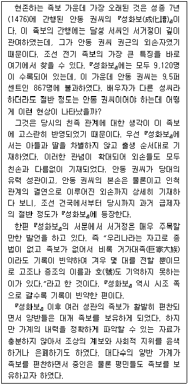
- 족보를 보유하면 양반 가문으로 인정받았다.
- 조선시대 이전에는 가계 전승 기록이 존재하지 않았다.
- 「성화보」는 조선 후기와 달리 모계 중심의 친족 관계를 반영하였다.
- 「성화보」 간행 이후 족보의 중요성이 인식되어 거가대족의 족보는 정확하게 작성되었다.
- 태조부터 성종 때까지 유력 성관과 친인척 관계인 과거 급제자들이 많았다.
(정답률: 알수없음)
3. 다음 글에서 알 수 있는 것은?
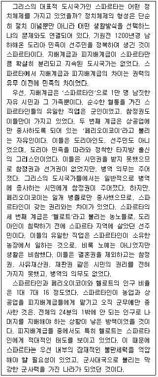
- 스파르타에서는 구성원의 계급에 따라 직업 선택이 제한되어 있었다.
- 스파르타에서는 병역 의무를 이행한 사람들에게는 참정권을 부여하였다.
- 스파르타가 막강한 군사대국이 될 수 있었던 것은 농업과 상공업을 발전시켰기 때문이다.
- 스파르타에서는 페리오이코이에게 병역 의무를 부여함으로써 지배층의 인구를 늘리려 하였다.
- 스파르타에서 시민권을 가지지 못한 헬로트는 의무만 있었으므로, 실질적으로는 노예나 마찬가지였다.
(정답률: 알수없음)
4. 다음 대화에 대한 분석으로 옳지 않은 것은?
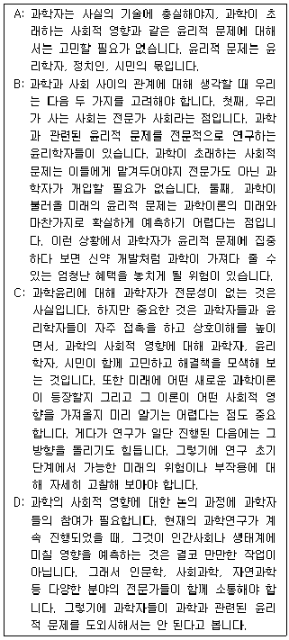
- A와 B는 과학자가 윤리적 문제에 개입하는 것에 부정적이다.
- B와 C는 과학윤리가 과학자의 전분야가 아니라고 본다.
- B와 C는 과학이론이 앞으로 어떻게 전개될지 정확히 예측하기 어렵다고 본다.
- B와 D는 과학자의 전문성이 과학이 초래하는 사회적 문제 해결에 긍정적 기여를 할 것이라고 본다.
- C와 D는 과학자와 다른 분야 전문가 사이의 협력이 중요하다고 본다.
(정답률: 알수없음)
5. 다음 글에서 알 수 있는 것은?
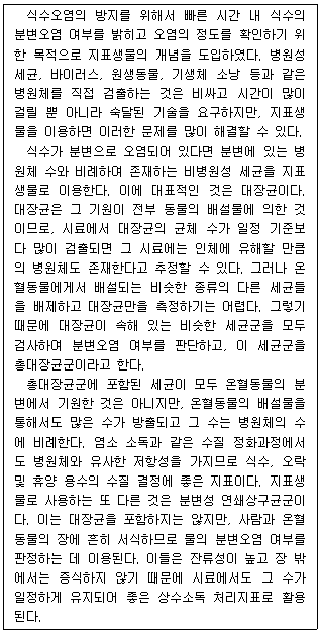
- 온혈동물의 분변에서 기원되는 균은 모두 지표생물이 될 수 있다.
- 수질 정화과정에서 총대장균군은 병원체보다 높은 생존율을 보인다.
- 채취된 시료 속의 총대장균군의 세균 수와 병원체 수는 비례하여 존재한다.
- 지표생물을 검출하는 것은 병원체를 직접 검출하는 것보다 숙달된 기술을 필요로 한다.
- 분변성 연쇄상구균군은 시료 채취 후 시간이 지남에 따라 시료 안에서 증식하여 정확한 오염지표로 사용하기 어렵다.
(정답률: 알수없음)
6. 다음 글의 문맥상 빈 칸에 들어갈 진술로 가장 적절한 것은?
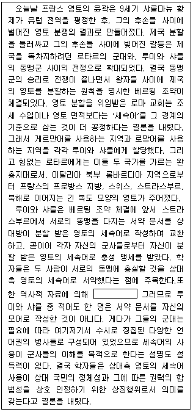
- 게르만어와 로망어는 세속어가 아니었다는 사실이 알려져 있다.
- 루이와 샤를 모두 게르만어를 모어로 사용하였다는 사실이 알려져 있다.
- 스트라스부르의 세속어는 루이와 샤를의 모어와 달랐다는 사실이 알려져 있다.
- 루이와 샤를의 모어는 각각 상대방이 분할 받은 영토의 세속어와 일치하였다는 사실이 알려져 있다.
- 각자 자신의 모어로 서약 문서를 작성하는 것은 서로의 동맹에 충실하겠다는 상징행위라는 사실이 알려져 있다.
(정답률: 알수없음)
7. 다음 글에서 추론할 수 없는 것은?
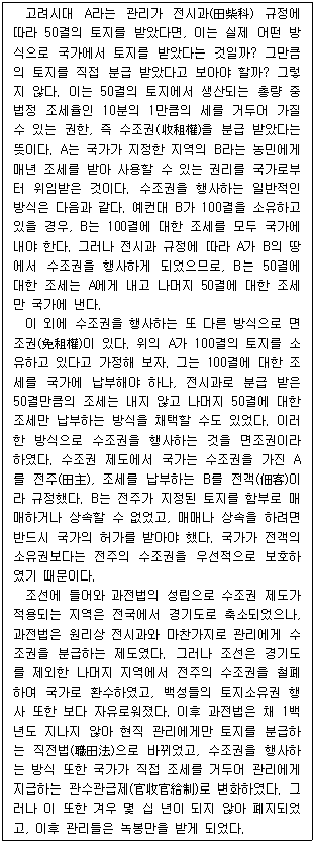
- 수조권 제도의 축소에 따라 전객의 소유권은 약화되어 갔다.
- 전시과에서 과전법을 거치며 국가가 직접 수조하는 토지가 확대되었다.
- 과전법에서 전주는 토지의 수조권자를, 전객은 토지의 소유권자를 가리킨다.
- 전시과에 따르면 토지소유자는 경우에 따라 국가와 개인 모두에게 조세를 납부해야 하였다.
- 면조권은 원리적으로 수조권을 분급 받은 전주가 자신이 소유한 토지에 수조권을 행사하는 것이다.
(정답률: 알수없음)
8. 다음 글에서 A의 견해로 볼 수 있는 것은?
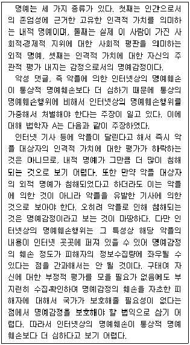
- 기사가 아니라 악플로 인해서 악플 피해자의 외적 명예가 침해된다.
- 악플이 달리는 즉시 악플 대상자의 내적 명예가 더 많이 침해된다.
- 악플 피해자의 명예감정의 훼손 정도는 피해자의 정보수집 행동에 영향을 받는다.
- 인터넷상의 명예훼손행위를 통상적 명예훼손행위에 비해 가중해서 처벌하여야 한다.
- 인터넷상의 명예훼손행위의 가중처벌 여부의 판단에서 세 종류의 명예는 모두 보호하여야 할 법익이다.
(정답률: 알수없음)
9. 다음 글에서 알 수 없는 것은?
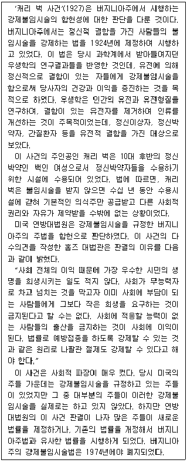
- 당시 우생학에 따르면 캐리 벅은 유전적 결함을 가진 사람이었다.
- 버지니아주법은 정신박약이 유전되는 것이라는 당시의 과학 지식을 반영하여 제정된 것이었다.
- 버지니아주법에 의하면 캐리 벅에 대한 강제불임시술은 캐리 벅 개인의 이익을 위한 것이다.
- 홈즈에 따르면 사회가 무능력자로 넘치지 않기 위해서는 사회에 부담이 되는 사람들에게 희생을 요구할 수 있다.
- 버지니아주법이 합헌으로 판단되기 이전, 불임시술을 강제하는 법을 가지고 있던 다른 주들은 대부분 그 법을 집행하고 있었다.
(정답률: 알수없음)
10. 다음 글에서 추론할 수 있는 것만을 ＜보기＞에서 모두 고르면?
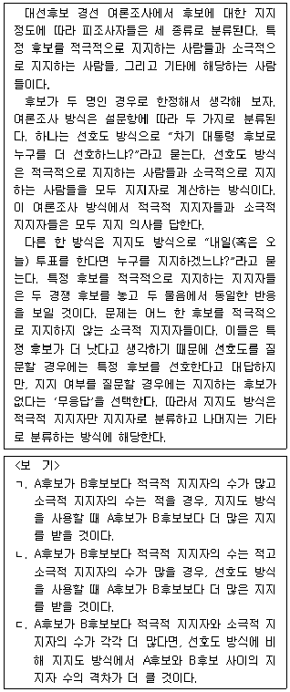
- ㄱ
- ㄷ
- ㄱ, ㄴ
- ㄴ, ㄷ
- ㄱ, ㄷ
(정답률: 알수없음)
11. 다음 글의 빈 칸에 들어갈 진술로 가장 적절한 것은?
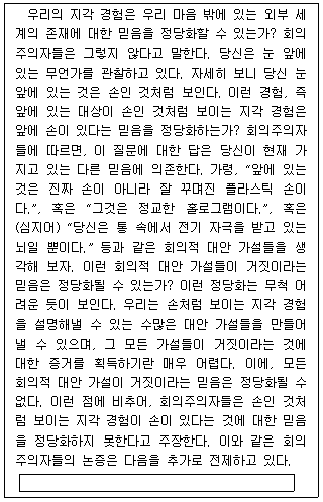
- 우리가 외부 세계의 존재에 대한 믿음을 가지고 있다면 외부 세계는 존재할 수밖에 없다.
- 외부 세계가 존재한다고 하더라도 모든 회의적 대안 가설이 참이라는 믿음은 정당화될 수 있다.
- 외부 세계의 존재에 대한 믿음이 거짓이라는 것을 정당화하기 위해서 사용할 수 있는 방법에는 지각 경험이 유일하다.
- 지각 경험을 통해 외부 세계의 존재에 대한 믿음을 정당화하기 위해서는 회의적 대안 가설에 대한 믿음과 외부 세계에 대한 믿음이 양립가능하다는 것이 증명되어야 한다.
- 모든 회의적 대안 가설이 거짓이라는 믿음이 정당화될 수 없다면, 손인 것처럼 보이는 지각 경험은 손이 있다는 것에 대한 믿음을 정당화하지 못한다.
(정답률: 알수없음)
12. 다음 글의 내용이 참일 때, 반드시 거짓인 것은?
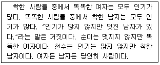
- 철수는 똑똑하지 않다.
- 철수는 멋지거나 똑똑하다.
- 똑똑하지만 멋지지 않은 사람이 있다.
- 순이가 인기가 많지 않다면, 그녀는 착하지 않다.
- “똑똑하지만 인기가 많지 않은 여자가 있다.”라는 말이 거짓이라면, 순이는 인기가 많다.
(정답률: 알수없음)
13. 다음 글의 내용이 참일 때, 반드시 참인 것만을 ＜보기＞에서 모두 고르면?
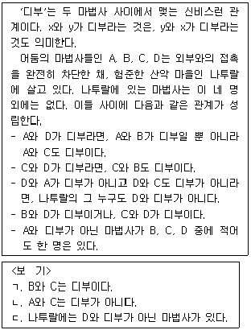
- ㄴ
- ㄷ
- ㄱ, ㄴ
- ㄱ, ㄷ
- ㄱ, ㄴ, ㄷ
(정답률: 알수없음)
14. 다음 글의 (가)와 (나)에 들어갈 진술을 ＜보기＞에서 골라 알맞게 짝지은 것은?(순서대로 (가), (나))
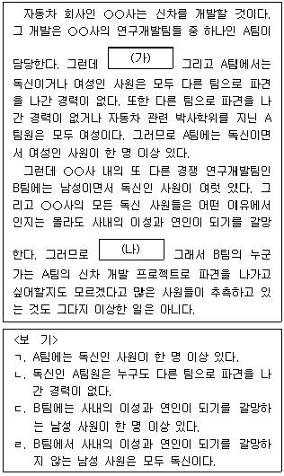
- ㄱ, ㄷ
- ㄱ, ㄹ
- ㄴ, ㄷ
- ㄴ, ㄹ
- ㄷ, ㄴ
(정답률: 알수없음)
15. 다음 글에 대한 분석으로 적절한 것만을 ＜보기＞에서 모두 고르면?
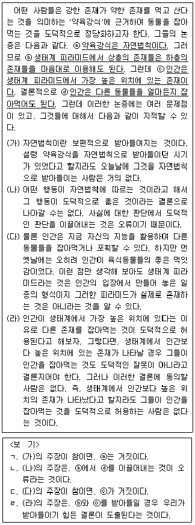
- ㄱ, ㄴ
- ㄱ, ㄷ
- ㄷ, ㄹ
- ㄱ, ㄷ, ㄹ
- ㄴ, ㄷ, ㄹ
(정답률: 알수없음)
16. 다음 글에 비추어 볼 때 <사례>의 빈 칸에 들어갈 진술로 가장 적절한 것은?
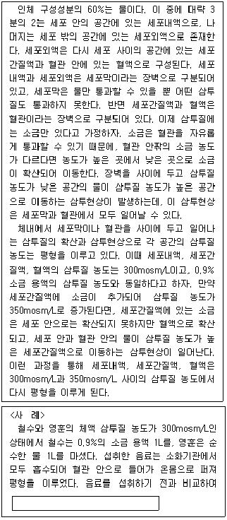
- 철수의 세포내액 증가량과 세포외액 증가량은 같다.
- 영훈의 세포외액 증가량이 세포내액 증가량보다 적다.
- 철수의 세포외액 증가량은 영훈의 세포외액 증가량보다 적다.
- 철수의 세포내액 증가량은 영훈의 세포외액 증가량보다 많다.
- 철수의 세포내액의 삼투질 농도는 영훈의 세포내액의 삼투질 농도보다 낮다.
(정답률: 알수없음)
17. 다음 글의 (가)~(다)에 대한 평가로 적절한 것만을 ＜보기＞에서 모두 고르면?
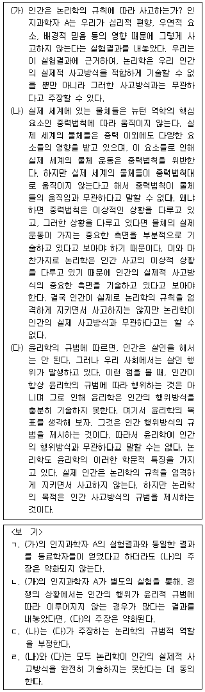
- ㄱ, ㄴ
- ㄱ, ㄷ
- ㄱ, ㄹ
- ㄴ, ㄷ
- ㄷ, ㄹ
(정답률: 알수없음)
18. 다음 글의 <이론>에 대한 반례에 해당하는 것만을 ＜보기＞에서 모두 고르면?
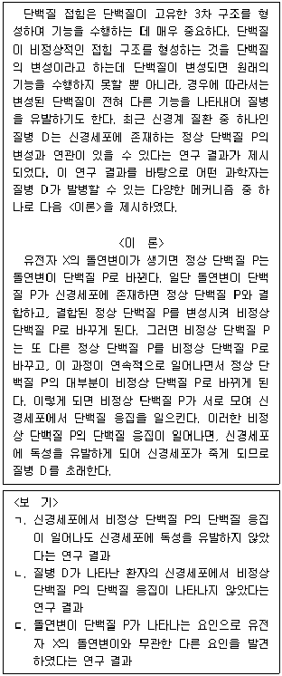
- ㄱ
- ㄴ
- ㄱ, ㄷ
- ㄴ, ㄷ
- ㄱ, ㄴ, ㄷ
(정답률: 알수없음)
19. 위 글의 (나)에서, 영희의 가설과 근거 사이의 관계에 대한 평가로 적절하지 않은 것은?(19번 공통지문 문제)
- 근거 a는 가설 B를 강화한다.
- 근거 c는 가설 A를 약화한다.
- 근거 d는 가설 C를 강화한다.
- 근거 b와 c에 비추어 수용될 수 있는 가설은 한 개이다.
- 근거 a~d에 비추어 수용될 수 있는 가설은 한 개이다.
(정답률: 알수없음)
20. 다음 글에서 알 수 있는 것은?
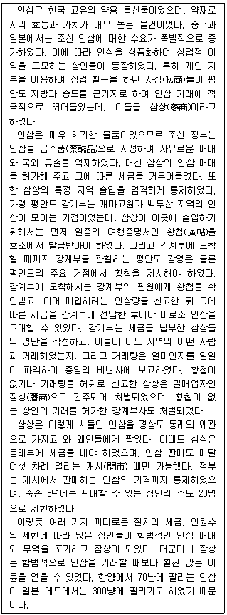
- 황첩을 위조하여 강계부로 잠입하는 잠상들이 많았다.
- 정부는 잠상을 합법적인 삼상으로 전환시키기 위해 노력하였다.
- 상인들은 송도보다 강계부에서 인삼을 더 싸게 구입할 수 있었다.
- 왜관에서의 인삼 거래는 한양에서의 거래보다 삼상에게 4배 이상의 매출을 보장해 주었다.
- 중앙정부는 강계부에서 삼상에게 합법적으로 인삼을 판매한 백성이 어느 지역 사람인지를 파악할 수 있었다.
(정답률: 알수없음)
21. 다음 글에서 알 수 있는 것은?
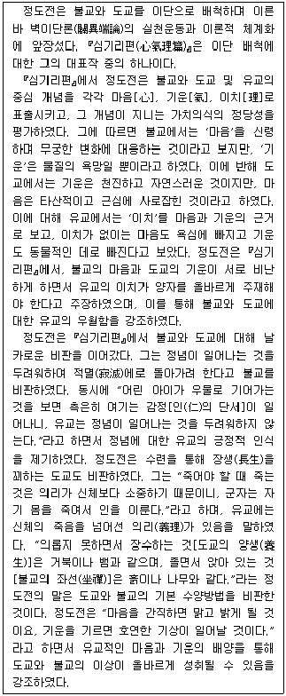
- 정도전은 보편적인 이치가 성립하려면 감정을 배제할 것을 주장하였다.
- 정도전은 불교와 도교를 모두 비판하였지만 상대적으로 불교를 더 비판하였다.
- 정도전은 도교를 비판하면서 살신성인(殺身成仁)을 가치 있는 일로 간주하였다.
- 정도전은 불교와 도교의 가치의식이 잘못된 근본 이유를 수행방법에서 찾았다.
- 정도전은 도교와 불교가 서로의 장점을 흡수할 때 자신들의 이상을 성취할 수 있다고 보았다.
(정답률: 알수없음)
22. 다음 글에서 추론할 수 있는 것은?
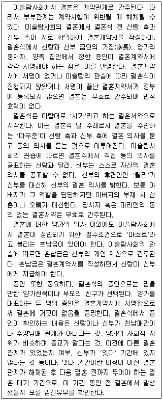
- 이슬람사회에서 남성은 전처의 잇다 기간 동안에는 재혼할 수 없다.
- 이슬람사회에서 결혼은 계약관계로 간주되기 때문에 결혼의 당사자가 직접 결혼계약서에 서명해야 법적 효력이 있다.
- 이슬람사회의 결혼계약서에는 신랑과 신부의 가족관계, 양가의 사회적 배경, 양가의 결합에 대한 정부의 승인 등의 내용이 들어 있다.
- 이슬람사회에서 남녀의 결혼이 합법적으로 인정받기 위해서는 결혼 중재자와 결혼식 주례, 결혼계약서, 혼납금, 증인, 결혼식 하객이 필수적이다.
- 이슬람사회에서 대리인을 통하지 않고 법적으로 유효하게 결혼 동의 의사를 밝힌 결혼 당사자는 상대방에게 혼납금을 지급하였을 것이다.
(정답률: 알수없음)
23. 다음 글의 (가)와 (나)에 대한 설명으로 옳은 것만을 ＜보기＞에서 모두 고르면?
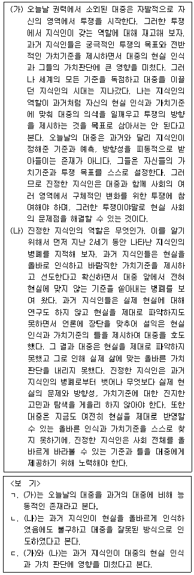
- ㄱ
- ㄴ
- ㄷ
- ㄱ, ㄷ
- ㄱ, ㄴ, ㄷ
(정답률: 알수없음)
24. 다음 글에서 추론할 수 있는 것은?
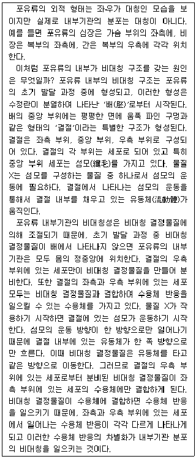
- 포유류 배의 초기 발달 과정에서 유동체는 결절의 좌측 부위에서 우측 부위로 흐른다.
- 포유류 배의 초기 발달 과정에서 물질 X는 좌측 부위의 결절에 있는 수용체와 결합한다.
- 포유류 배의 초기 발달 과정에서 비대칭 결정물질은 결절의 중앙 부위의 세포로부터 만들어진다.
- 포유류 배의 초기 발달 과정에서 우측 부위의 결절은 비대칭 결정물질에 대한 수용체를 가지고 있다.
- 포유류 배의 초기 발달 과정에서 유동체의 이동 방향이 달라지면 포유류의 심장은 몸의 정중앙에 위치한다.
(정답률: 알수없음)
25. 다음 글의 문맥상 빈 칸에 들어갈 진술로 가장 적절한 것은?
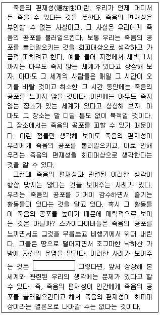
- 스카이다이버들은 죽음에 대한 공포를 느끼지 않는 사람들이라는 것이다.
- 인간에게 죽음의 공포를 불러일으키는 것이 반드시 회피대상은 아니라는 것이다.
- 죽음의 편재성이 우리에게 죽음의 공포를 불러일으킨다는 것은 거짓이라는 것이다.
- 죽음의 공포로부터 자유로운 공간이나 시간이 존재한다는 상상은 현실과 동떨어졌다는 것이다.
- 죽음을 피할 수 있는 공간에 사람들이 모이는 이유는 죽음에 대한 공포 때문이라기보다는 죽음에 대한 동경 때문이라고 보아야 한다는 것이다.
(정답률: 알수없음)
26. 다음 글에서 알 수 없는 것은?
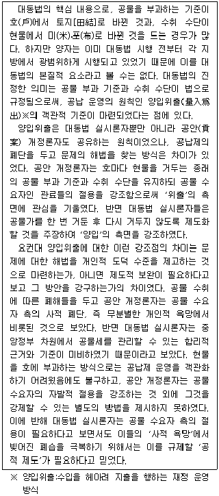
- 대동법 실시론자는 양입위출의 법적 기준을 마련하고자 하였다.
- 공안 개정론자와 대동법 실시론자는 양입위출의 원칙을 공유하였다.
- 공안 개정론자는 절용을 통해 공물가의 수취 액수를 고정하는 데 관심을 기울였다.
- 공안 개정론자와 대동법 실시론자는 공물 부과 기준과 수취 수단에 대한 주장이 달랐다.
- 대동법 실시론자는 공물 수요자의 도덕적 수준을 높여야 한다는 공안 개정론자의 주장에 반대하지 않았다.
(정답률: 알수없음)
27. 다음 글에서 알 수 있는 것은?
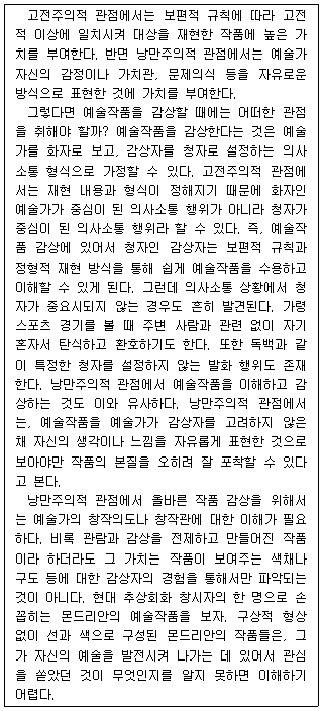
- 고전주의적 관점과 낭만주의적 관점의 공통점은 예술작품의 재현 방식이다.
- 고전주의적 관점에서 볼 때, 예술작품을 감상하는 것은 독백을 듣는 것과 유사하다.
- 낭만주의적 관점에서 볼 때, 예술작품 창작의 목적은 감상자 위주의 의사소통에 있다.
- 낭만주의적 관점에서 볼 때, 예술작품의 창작의도에 대한 충분한 소통은 작품 이해를 위해 중요하다.
- 고전주의적 관점에 따르면 예술작품의 본질은 예술가가 자신의 생각이나 느낌을 창의적으로 표현하는 데 있다.
(정답률: 알수없음)
28. 다음 글에서 알 수 있는 것은?
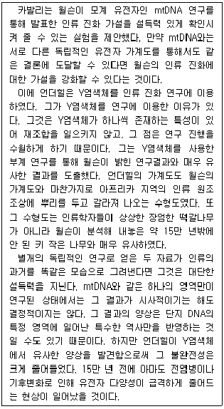
- 윌슨의 mtDNA 연구결과는 인류 진화 가설에 대한 결정적인 증거였다.
- 부계 유전자 연구와 모계 유전자 연구를 통해 얻은 각각의 인류 진화 수형도는 매우 비슷하다.
- 윌슨과 언더힐의 연구결과는 현대 인류 조상의 기원에 대한 인류학자들의 견해를 뒷받침한다.
- 언더힐은 우리가 갖고 있는 Y염색체 연구를 통해 인류가 아프리카에서 유래했다는 것을 부정했다.
- 언더힐이 Y염색체를 인류 진화 연구에 이용한 것은 염색체 재조합으로 인해 연구가 쉬워졌기 때문이다.
(정답률: 알수없음)
29. 다음 논증 (가)와 (나)에 대한 평가로 적절한 것만을 ＜보기＞에서 모두 고르면?
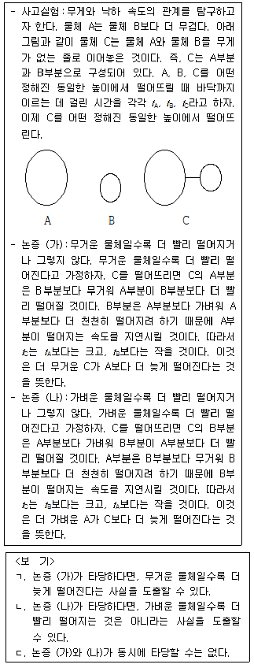
- ㄱ
- ㄴ
- ㄷ
- ㄱ, ㄷ
- ㄴ, ㄷ
(정답률: 알수없음)
30. 다음 글의 (가)와 (나)에 들어갈 진술을 ＜보기＞에서 골라 알맞게 짝지은 것은?(순서대로 (가), (나))
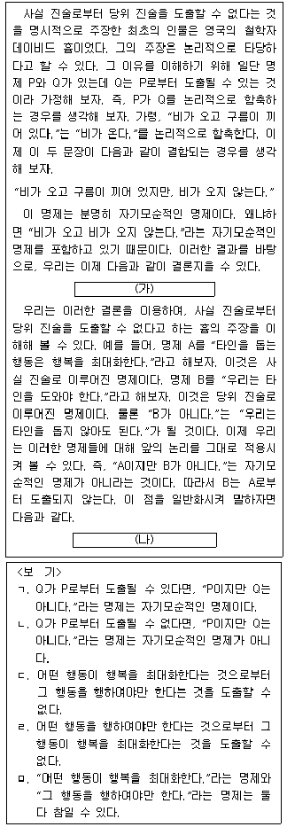
- ㄱ, ㄷ
- ㄱ, ㅁ
- ㄴ, ㄷ
- ㄴ, ㄹ
- ㄴ, ㅁ
(정답률: 알수없음)
31. 다음 글의 내용이 참일 때, 반드시 채택되는 업체의 수는?
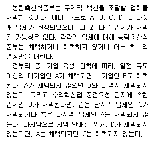
- 1개
- 2개
- 3개
- 4개
- 5개
(정답률: 알수없음)
32. 다음 글의 내용이 참일 때, 외부 인사의 성명이 될 수 있는 것은?
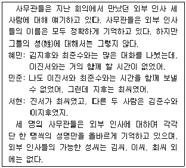
- 김진서, 이준수, 최지후
- 최진서, 김준수, 이지후
- 이진서, 김준수, 최지후
- 최진서, 이준수, 김지후
- 김진서, 최준수, 이지후
(정답률: 알수없음)
33. 다음 글의 ㉠이 참일 때, 참일 수 있는 주장은?
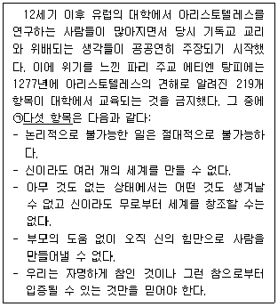
- 영희는 자기 자신보다 키가 크다.
- 충분히 많은 사람들이 믿으면 둥근 삼각형이 존재한다고 믿어도 된다.
- 우리가 사는 세계는 약 137억 년 전 아무 것도 없는 상태에서 빅뱅을 통해 생겨났다.
- 신은 우리가 사는 세계와 비슷하지만 세부 특징이 조금 다른 세계를 여럿 만들 수 있다.
- 정자와 난자를 체외수정시켜 탄생한 시험관 아기는 다른 사람과 아무런 차이가 없는 사람이다.
(정답률: 알수없음)
34. 다음 글에서 추론할 수 있는 것만을 ＜보기＞에서 모두 고르면?
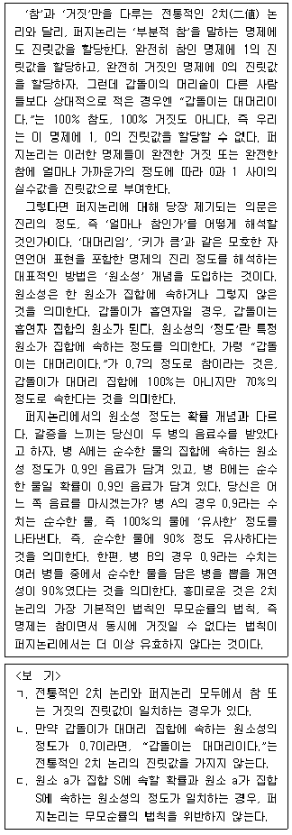
- ㄱ
- ㄷ
- ㄱ, ㄴ
- ㄴ, ㄷ
- ㄱ, ㄴ, ㄷ
(정답률: 알수없음)
35. 다음 글에서 추론할 수 있는 것만을 ＜보기＞에서 모두 고르면?
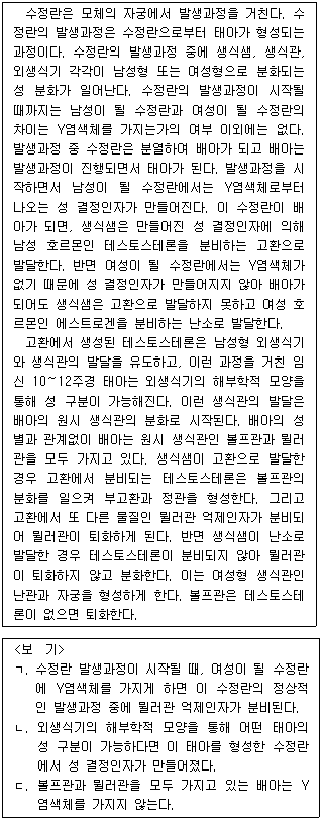
- ㄱ
- ㄷ
- ㄱ, ㄴ
- ㄴ, ㄷ
- ㄱ, ㄴ, ㄷ
(정답률: 알수없음)
36. 다음 글의 주장을 약화하는 것만을 ＜보기＞에서 모두 고르면?
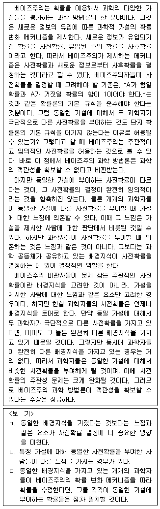
- ㄱ
- ㄴ
- ㄱ, ㄷ
- ㄴ, ㄷ
- ㄱ, ㄴ, ㄷ
(정답률: 알수없음)
37. 다음 논증에 대한 설명으로 옳은 것만을 ＜보기＞에서 모두 고르면?
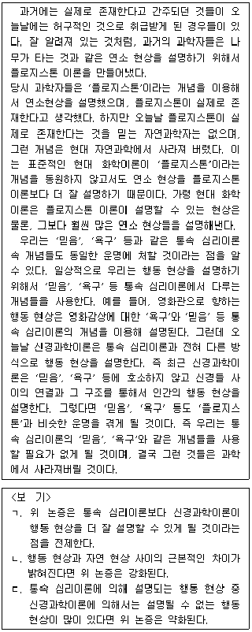
- ㄱ
- ㄴ
- ㄱ, ㄷ
- ㄴ, ㄷ
- ㄱ, ㄴ, ㄷ
(정답률: 알수없음)
38. 위 글의 (가)와 (나)에 대한 설명으로 옳은 것은?(39번 공통지문 문제)
- (가)는 권리1과 권리2가 서로 다르다는 것을 인정하지만 (나)는 그렇지 않다.
- (가)와 (나)는 모두 어떤 권리에 따른 행동이 민주주의 국가에서 처벌되기도 한다는 사실을 인정한다.
- (가)는 민주주의 국가에서 도덕적 의무와 도덕적 권리가 양립가능하다고 주장하지만 (나)는 그렇지 않다.
- (나)는 민주주의 국가가 양심에 따를 권리를 인정할 필요는 없다고 주장하지만 (가)는 그렇지 않다.
- 민주주의 국가의 권리가 모두 권리1에 해당하는 것이라면 (나)의 주장은 강화되지만 (가)의 주장은 강화되지 않는다.
(정답률: 알수없음)